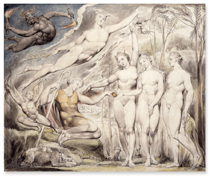

|
William
Blake (1757-1827)
Born
in London, the son of a hosier, at the age of ten Blake was sent
to a drawing school kept by Henry Pars in the Strand where he had
the opportunity of drawing after the antique. Four years later he
was apprenticed to James Basire, engraver to the Society of Antiquaries,
where he remained for seven years learning the trade that was to
earn him his living and enable him in between times to produce his
own books. In 1778 at the end of his apprenticeship he proceeded
to the school of the Royal Academy, where he continued his early
study from the antique and learnt to draw from the living model.
Right: William Blake, The Judgment of Paris,
a watercolour England, AD 1811
Blake became acquainted with some of the rising artists of his time,
among them Stothard, Flaxman and Fuseli. He used to recite and sometimes
sing his poems at the house of the Rev. A. S. Mathew and it was
through the influence of Mathew and Flaxman that Blake's first volume
of poetry was printed in 1783. Blake evolved a radical form of Christianity,
which rejected the mechanistic laws of Bacon, Locke and Newton.
He opposed the 'mind forgd menacles' of repressive ideologies be
they of church, state or even the discourses of Sir Joshua Reynolds,
of whom he said 'This man was hired to depress art'.
His
illuminated books form the heart of the collection. Blake used both
hand-colouring and colour printing, his first experiment with the
latter occurring in 1788 with three small tracts entitled There
is no natural Religion. By the following year in Songs
of Innocence, the unique style of his illuminated books had
emerged with their decorative trellised margins imbued with Blake's
personal imagery. Songs of Experience followed, then the
Book of Thel which is the first of the longer narrative
poems. In these books and the great prophetic works of the 1790s,
Blake created a complex mythology charting a vast psychic battleground
where the powers of inspiration and imagination, symbolised in some
of the books as the character Los, challenge the cult of
reason symbolised by the aged Urizen, who is pictured on
the title page of the Book of Urizen with tables and book
of law beneath the tree of Nature. The culmination of these difficult
but deeply rewarding books is found in Jerusalem, the emanation
of the Giant Albion, composed between 1804 and 1820. Blake
was himself responsible for the writing, etching, printing, colouring
and even the making of the pigments, and no two copies of the illuminated
books are identical. The British Museum houses one of the finest
collections, lacking copies of only a very few of them.
The
British Museum has a comprehensive collection of Blake's engravings
and relief etchings including his commercial work. Among his finest
work are the illustrations to the Book of Job published
in 1825. Blake had made a renewed study the engravings of Marcantonio
and Dürer, achieving a masterly technique and subtlety seldom
conveyed in his earlier manner of the 'dot and lozenge' technique
learned from Basire. The Book of Job plates were his
last experiment in the combination of text and image. The page is
dominated by the central engravings whose imagery is complemented
by the designs in the margins, interwoven with texts either from
the Book of Job in the Old Testament or other biblical
passages. The Department of Prints and Drawings owns the twenty-two
copper plates for the Book of Job and the seventeen wood
blocks used for Blake's illustrations to Thornton's Pastorals
of Virgil, 1821.
The
Museum's collection of drawings ranges from simple preparatory pencil
sketches to highly finished watercolours including illustrations
to Shakespeare and to Dante. Also in the collection are the five
hundred and thirty-seven watercolour designs wofhich Blake executed
about 1797 to illustrate Edward Young's long religious poem Night
Thoughts. These make a fascinating study of Blake's symbolism
and his use of visual interpretation to subvert as well as to comment
upon the meaning of the original text.
Works
in Other Collections
| London |
Tate
Britain |
| UK
|
Fitzwilliam
Museum, Cambridge |
| Australia |
National
Gallery of Victoria, Melbourne |
| USA
|
Huntington
Library, San Marino |
| |
National
Gallery of Art and Library of Congress, Washington |
| |
Pierpont
Morgan Library, New York |
| |
Yale
Center for British Art, New Haven |
Further
Reading
Blake
Newsletter 20, A Handlist of Works by William Blake in the Department
of Prints and Drawings of the British Museum. Spring, 1972
Bindman,
D. Blake as an Artist. Phaidon, 1977
Bindman,
D. and Toomey, D. The Complete Graphic Works by William Blake.
Thames and Hudson, 1978
Bindman,
D. William Blake: Illuminated Books. 6 Vols. The William
Blake Trust and Tate Publishing, 1998
Bindman,
D. William Blake 1757-1827. The British Museum and the
British Council, 2000
Bindman,
D. William Blake: The Complete Illuminated Books. Thames
and Hudson, 2000
Bindman,
D. William Blake: The Divine Comedy. Bibliothèque de l'Image,
2000
Butlin,
M. The Paintings and Drawings by William Blake. Yale University
Press, 1981
Essick,
R. William Blake: The Printmaker. Princeton University
Press, 1980
Hamlyn,
R. and Phillips, M. William Blake. Tate Publishing, 2000
Noon,
P. The Human Form Divine: William Blake from the Paul Mellon
Collection. Yale University Press, 1997
Vaughan,
W. William Blake. Tate Publishing, 1999
Viscomi,
J. Blake and the Idea of the Book. Princeton University
Press, 1993
The
William Blake Digital Archive in America, based at the University
of Virginia,
can be accessed via: http://blakearchive.org
|